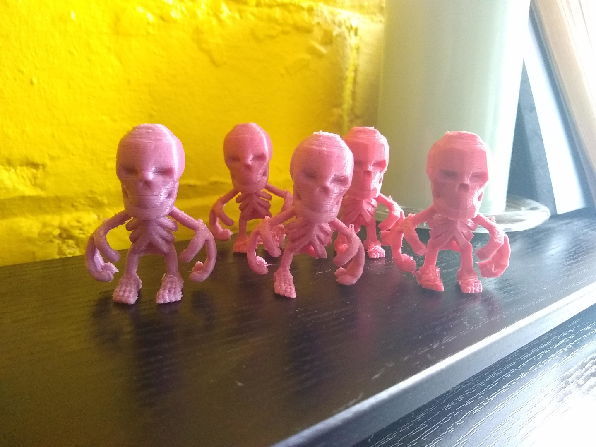

#^_blog_post_json
{
"title":"3DPrint Mr Boneman",
"tags":["3dprint"],
"filename":"wetgenes_3dprint_mr_boneman",
}
#^title trim=ends
{_blog_post_json.title}
#^_blog_post_body form=markdown
{title}
-------
This is a test print from my Avatar generator, the mesh had to be
messed around with a bit, adding something to hold the hands and feet
to the torso then bones needed thickening up in places and angles
reduced in order to get it to print without needing support. Which is
also why the STL is upside down, that way it grows upwards like a
branching tree and mostly works perfectly until it gets to the feet
which is just OK. It was printed with 2mm of support so the very top of
the head sticks to the build plate without being cut flat.
This is the Slic3r config
files I used with an ender 3 pro. I've not really had much luck
with support materials beyond just using it to stick the first few
layers to the bed so that is how it is setup. Should take an hour and
half to print and if it goes wrong it will be right at the end when it
gets to the feet.

In other news after ripping a hole in my magnetic bed cover I've
finally worked out how to use the glass bed. The secret is Pritt Stick,
slap a bit of that on each time and prints will actually stick to the
bed rather than start sliding around halfway through a print. Tried
other suggested tricks but that is the only one that worked for me. Not
sure needing glue with each print is an upgrade from the magnetic bed
cover which I found much easier to use but at least it works now.